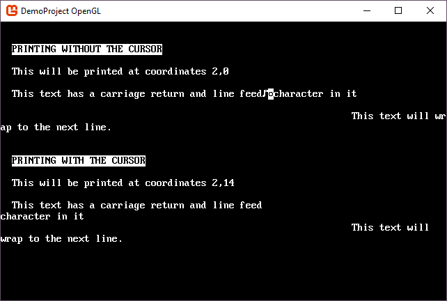

How to draw on a Console
Each console provides methods to change cell colors, glyphs, print text, draw boxes, and other types of drawing. This article shows you different ways to interact with the cells of a console.
The SadConsole.Console is broken up into multiple cells, all arranged in a grid. Each cell can change its foreground and background color and the character glyph it is currently showing.
Color
The foreground or the background of a cell can be colored. When the background is colored, it fills the entire cell with that color. When the foreground is colored, it changes the color of the character glyph being displayed in that cell.
Background
You can set or get the background color of a cell by using its x,y coordinates and the SetBackground or GetBackground method.
// Set the background
console.SetBackground(10, 10, Microsoft.Xna.Framework.Color.White);
// Get the background
var color1 = console.GetBackground(10, 10);
Foreground
You can set or get the foreground color of a cell by using its x,y coordinates and the SetForeground or GetForeground method. However, if the character glyph of the cell is (and by default it is) blank, you will not see any foreground coloring.
// Set the foreground
console.SetForeground(10, 10, Microsoft.Xna.Framework.Color.Blue);
// Get the foreground
var color1 = console.GetForeground(10, 10);
Character
The character displayed on a cell can be changed by using its x,y coordinates and calling the SetGlyph method. It works much the same as the color does. You can get or set the character in a cell. The overloads for the SetGlyph method also allow you to provide foreground and background colors if you want.
Set/Get a character using int
// Set the character to index 1 on the font sheet, a smiley face.
console.SetGlyph(10, 10, 1);
// Get the character glyph at 10,10
int character = console.GetGlyph(10, 10);
Set a character using System.Char
.NET easiy converts between the char type and the int type.
char character = 'B';
console.SetGlyph(10, 10, character);
Set a character along with a foreground color
console.SetGlyph(10, 10, 13, Color.Purple);
Set a character with fore/back color
console.SetGlyph(10, 10, 13, Color.Purple, Color.Green);
Printing
Setting the glyph cell-by-cell is not very efficient when you have a string you want to print. The console provides a way to print an entire string.
console.Print(2, 0, "This will be printed at coordinates 2,0");
Additionally, you can read the characters back from a console into a string. This uses an x,y location for the start of the string, and then the length of the string to read. For example, the previous code example printed a string at 2,0 that was 39 characters long, to read that string back out of the console and into a variable, you would use:
string text = console.GetString(2, 0, 39);
Using the Print statement on a console will parse each character in the string, as it is, and print it on the surface. That means that if your string has control characters, such as a new line command \r\n, these characters will also be printed. The console has a Cursor property that helps with this. By using Console.Cursor.Print, SadConsole parses your string and respects control codes. It also breaks up words so that they don't split across lines.
console.Cursor.Position = new Point(2, 0);
console.Cursor.Print("This will be printed at 2,0");
Here is an example of printing with and without the cursor. The console used here is 80x25 in size.
console.Print(2, 2, "PRINTING WITHOUT THE CURSOR", Color.Black, Color.White);
console.Print(2, 4, "This will be printed at coordinates 2,0");
console.Print(2, 6, "This text has a carriage return and line feed\r\ncharacter in it");
console.Print(63, 8, "This text will wrap to the next line.");
console.Print(2, 12, "PRINTING WITH THE CURSOR", Color.Black, Color.White);
console.Cursor.Move(new Point(2, 14)).Print("This will be printed at coordinates 2,14");
console.Cursor.Move(new Point(2, 16)).Print("This text has a carriage return and line feed\r\ncharacter in it");
console.Cursor.Move(new Point(63, 18)).Print("This text will wrap to the next line.");
